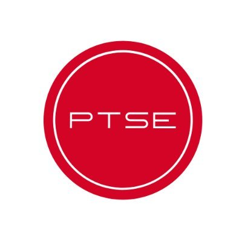

Since March of 2020, I have been the Vice President of the Michigan Sales Club. I first joined MSC in March of my Freshman year of college, and I instantly knew that I wanted to be more involved in the club. Since joining MSC's Executive Board, I have established and created an extensive network focused on active relations between alumni and current members. Additionally, I have collaborated with alumni and recruiters to increase awareness of sales principles and professional opportunities for University of Michigan students.
I have been working as an Analytics Support Intern for Premier Talent Sports and Entertainment since September of 2020. As an intern at PTSE, I have performed data analysis on existing statistics using Python to create predictive financial models. In addition to this, I compiled data of baseball players of professional and semi-professional standing to develop an algorithm to determine which athletes to target for representation, and collaborated with Certified MLBPA Player Agents on research projects to identify undervalued baseball players. This internship gave me hands-on experience working with Python and conducting predictive modeling for the first real time outside of the classroom, which is an experience that I truly look on fondly.
